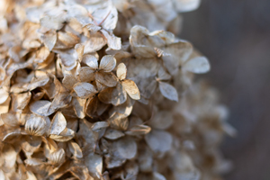
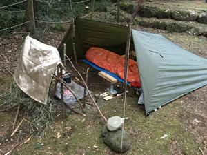
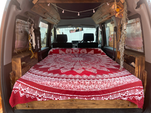
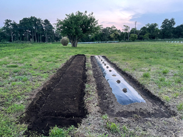
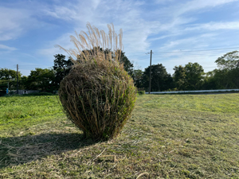

ひととなり
personality
穏やか
人をよく見ます。個人の特徴に寄り添った対応を継続することで、互いに信頼感が芽生えます。人と人を繋ぐことができた際は、自己満足に浸ります。見返りは求めません。感謝されると、私も感謝の気持ちになる。そんな人間です。

たとえば
- 春の山菜採り
- 海でイイッコ（久保貝）捕り
- 最低限の荷物でブッシュクラフト
- 自然公園で散歩
- 読書
- 心理学とWebデザインの勉強
- 適当に写真撮影
- 映画鑑賞（ステレオ・フューチャーなど）
- 草刈り（プロフェッショナル）
- スケートボード
- ハンドメイドクラフト（神様級）


自然を感じる
季節で異なる顔をみせる木々・温度・湿度・香り・風の音・木々の音・草の揺れる音などを、ワイドアングルビジョンで感じる時間が、最高です。情報の多い現代、一旦人工的情報から離れてみると、面白いアイデアが湧き水とともに湧いてくることもあります。
趣味
hobby
ボランティア
volunteer
刈払い
ある時気づいた。親戚の畑（耕作放棄地）は、約2000平米ほどあり、2m以上伸びたセイタカアワダチソウがびっちりと陣取っていたことに。それからおよそ半年かけて全てを刈上げ、周辺の農家様方に感謝をされ、それ以後 定期的に雑草の管理をしている。折角だから畑をやろうと、種から芽を育て地を耕し収穫を待ったが、猪や鹿のディナーになりました。


教訓
- セイタカアワダチソウは３分割で切断
- 虫とお友達になると言い聞かせる
- アオダイショウもお友達にする
- マダニ対策は重要
- 音楽でテンションを上げる
- 夏場は早朝5時開始
- 洗車した直後は畑に行かない
- 水分補給はこまめにとる
- 燃料代が半端ない
- 隣の畑のご夫婦の感謝が嬉しい
- 綺麗にするとこころも綺麗になった気がする
LOVE NATURE. LOVE PEOPLE. HEALTH IS KEY.LOVE NATURE. LOVE PEOPLE. HEALTH IS KEY!!
特徴